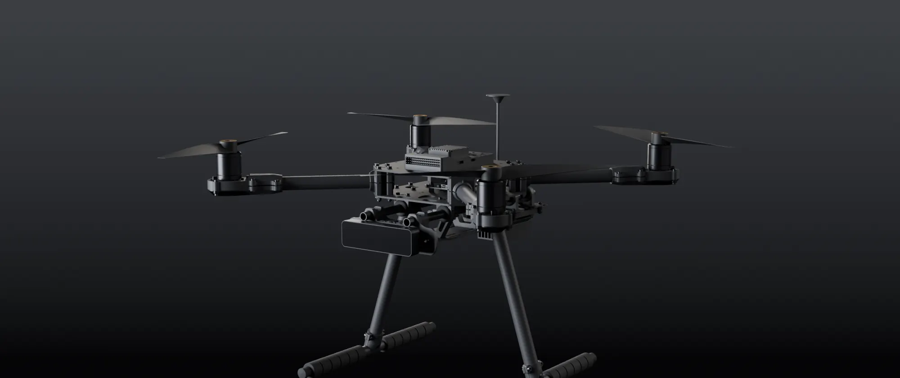

A laptop, a 915 MHz radio and an autonomous quadcopter. No internet, no cellular, no ground control software.

The two endurance and payload figures are Holybro's for the stock X500 V2, not measurements of this build, which carries a Jetson Orin Nano and an OAK-D. Everything shown below is built and bench-tested unless a caption says otherwise. Outdoor flight is pending.
How it works
A command leaves the laptop over 915 MHz LoRa. The Jetson relays it to the flight controller over MAVLink and sends the reply back the same way. Nothing in the path touches a network.

Every line is a real part of the repository. The one that is not an OK is the one that has not happened yet.

Three behaviours, written and bench-tested against a mock flight controller. All of them hold the same rule: if the radio link drops for more than four seconds, the aircraft returns to launch without being told.
Holds 3 m behind until a STOP arrives. Losing the camera makes it hover, not guess.

Coordinates go up one packet at a time, each acknowledged, and a second confirmation is required before anything spins.

LoRa is a broadcast medium, so one transmission arrives everywhere at the same instant.

Four phases done, two in progress, one not started. The command link works end to end on real radios and the aircraft is built. Flying it outdoors is what is left.
